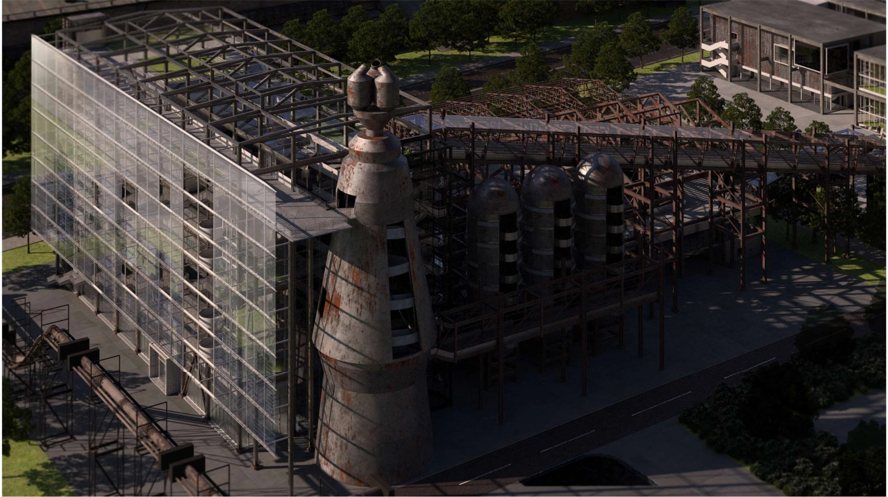
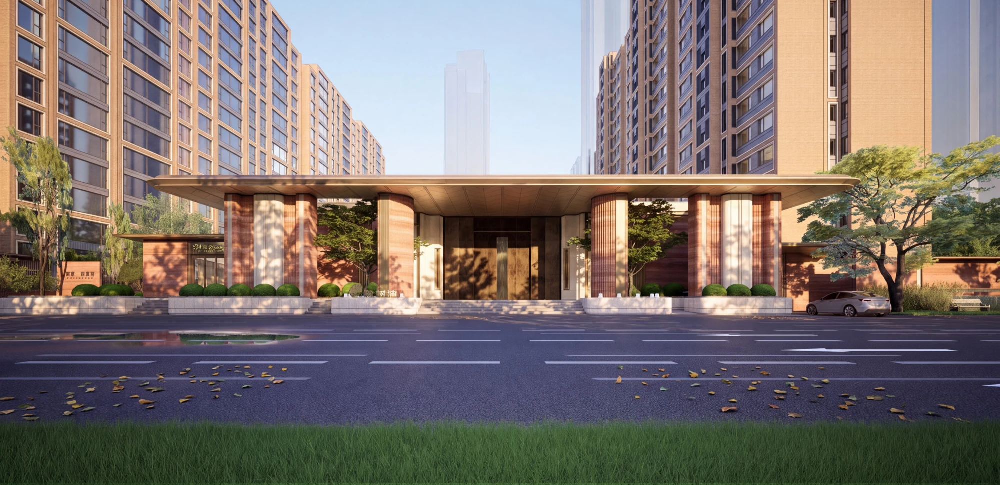
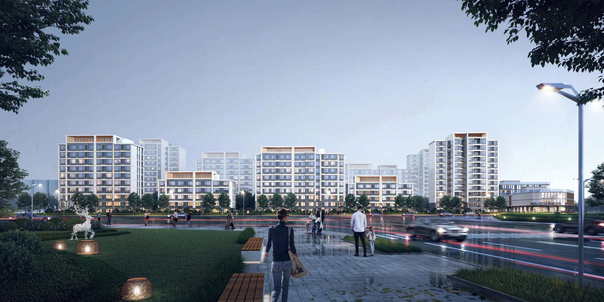
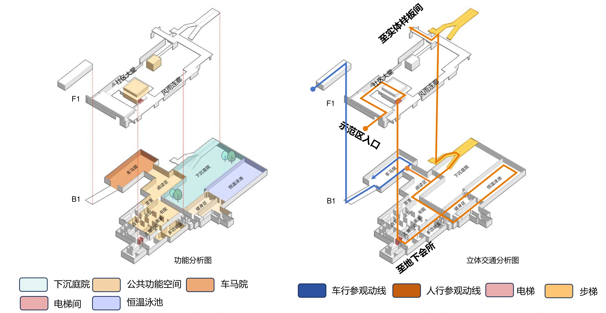
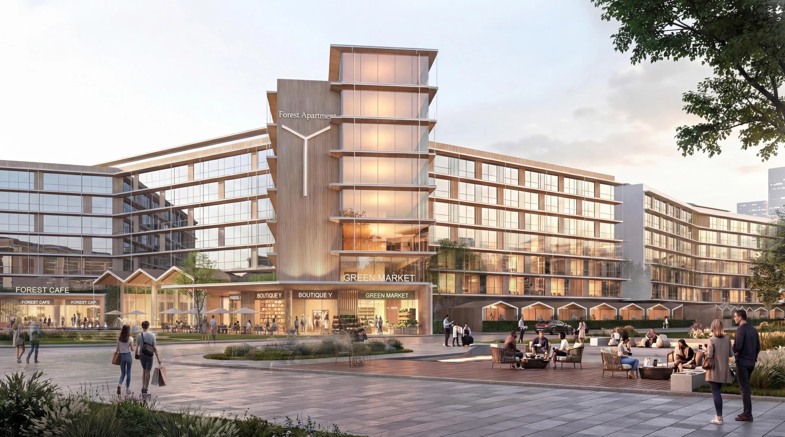
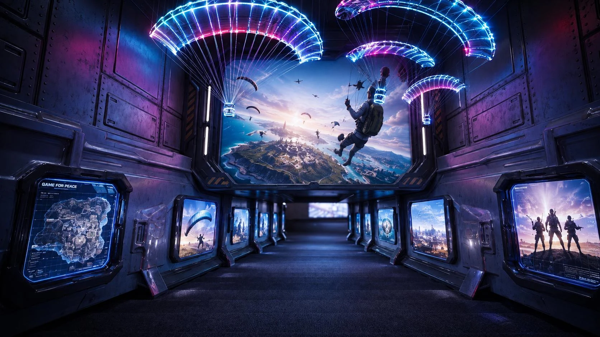
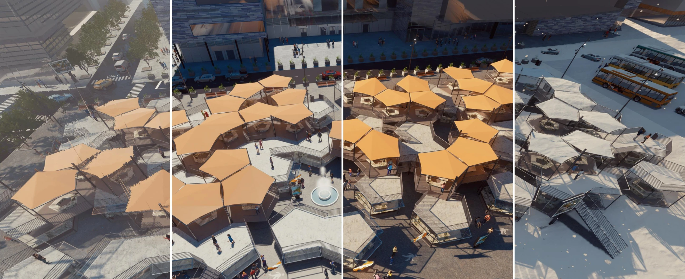
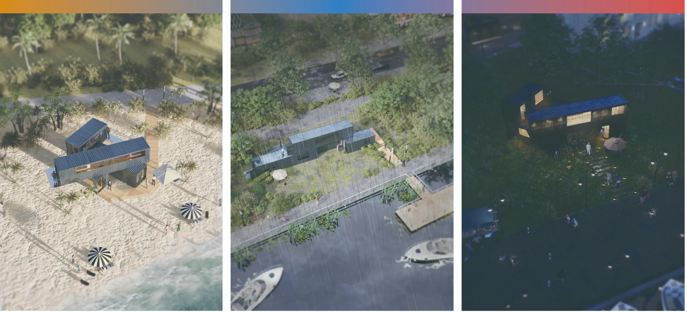
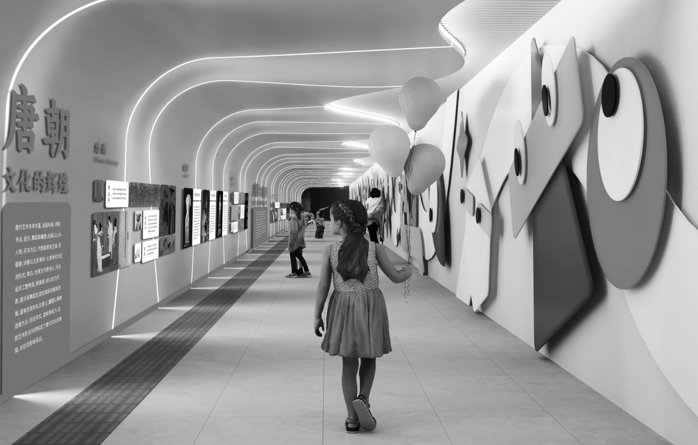
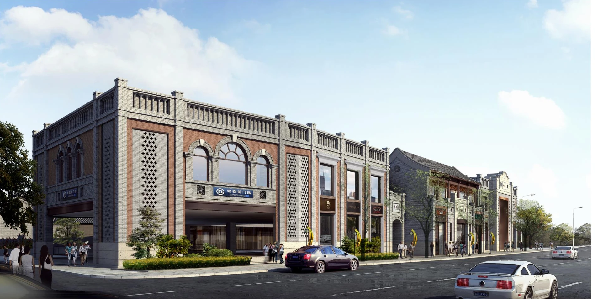

PORTFOLIO / 2021—2026
刘冠雄Guanxiong Liu
建筑 · 景观 · 城市更新
以场所为起点，连接建筑、景观与城市生活。
毕业于江南大学设计学院环境艺术设计专业，具备住宅、公建及更新改造项目经验。设计实践涵盖前期研究、产品定位、方案设计、多专业协同与施工配合，关注历史文脉、空间体验和设计落地之间的关系。
教育与实践经历
2025.03—2026.08
方案建筑师
担任华润唐山橡树湾 A03 地块项目负责人，参与拿地研判、产品策略、方案设计与深化落地；参与18项拿地测算及住宅专项研发。
2024.03—2024.11
地下通道美育文化改造 · 主创设计师
参与湖南某小学两校区之间地下通道的调研、空间设计、方案汇报及施工沟通。
2020.09—2024.07
江南大学 · 环境艺术设计本科
Rhino / CAD / Revit / SketchUp / D5 / V-Ray / Adobe Photoshop & Illustrator / ArcGIS / Figma
SELECTED PROJECTS / 01—11
项目探索
11 个项目

01学术设计
炉·仓
基于“新文脉主义”的工业遗产改造设计

02设计实践
唐山橡树湾 A03
设计策略 · 示范区深化 · 项目负责人

03设计实践
城建南苑 · 立面控制
效果与图纸对应 · 节点深化 · 住宅设计

04设计研发
华润示范区 · 空间模块研究
案例归类 · 手法提炼 · 设计研发

05设计实践
北京顺义 · 青年公寓
立面推演 · 青年社区 · 入口与节点深化

06设计实践
和平精英 · 联名艺术展览
空间叙事 · 沉浸式展陈 · 艺术装置

07学术设计
魔方 · 可变模块集市
模块生成 · 时间变化 · 集市空间

08学术设计
航海微型博物馆
空间类型学 · 展陈叙事 · 三城方案

09学术设计
城市荒野 · 太湖湿地
生态策略 · 水循环 · 观景塔与栈道

10设计实践
含光 · 儿童艺术长廊
儿童友好 · 空间改造 · 服务设计

11设计实践
其他设计 · 多尺度探索
竞赛与实习 · 课程设计 · 手绘与模型
没有找到匹配的项目。